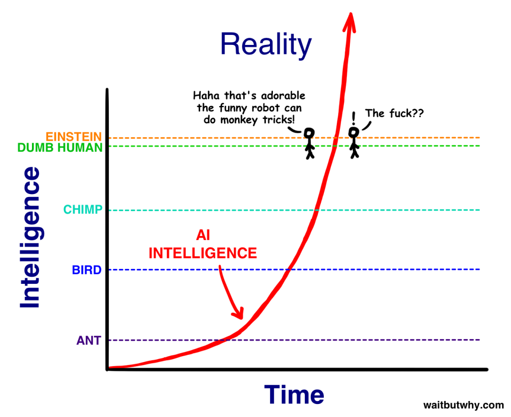
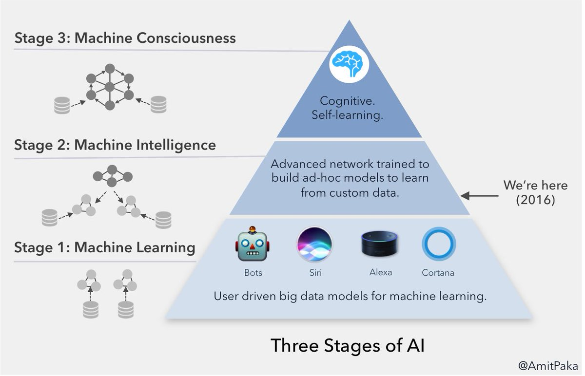
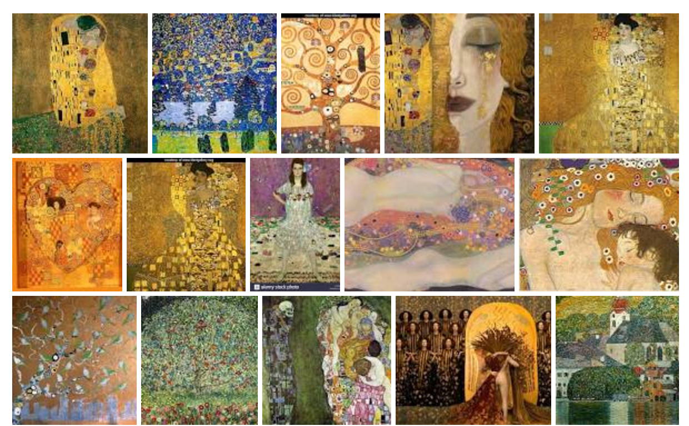
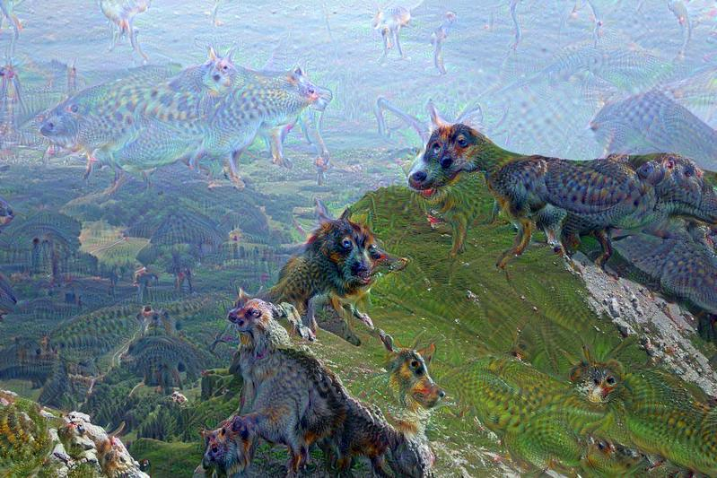
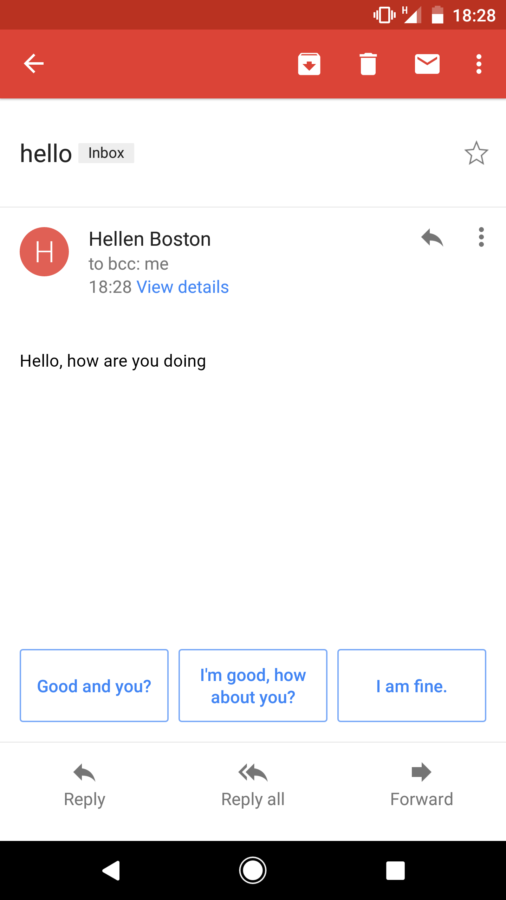
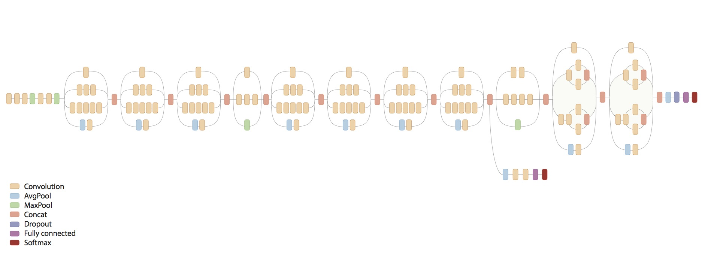

Einführung in Künstliche Intelligenz
Teil 1
Was ist Intelligenz?
Wie definiert ihr eine intelligente Maschine?
Was kann ein Kriterium sein, ob eine Maschine denken kann?
Beispiel Definition: Eine Maschine, die eine gerechte Gerichtsverhandlung führen kann
Diskutiert in Gruppen und einigt euch auf eine gemeinsame Definition
10 Minuten Zeit, dann Ergebnisse sammeln
Ergebnisse
- Team 1:
- Team 2:
- Team 3:
- Team 4:
Possible Definition
An artificial intelligence is a system that can learn how to learn, or in other words a series of instructions (an algorithm) that allows computers to write their own algorithms without being explicitly programmed for.
https://medium.com/cyber-tales/artificial-intelligence-what-it-is-and-why-now-4e4431942623
Oder: Maschine kann einen Menschen zu einem gesellschaftsfähigen Menschen erziehen
Oder: Ein System, das jedes Datumsformat versteht

https://twitter.com/brookLYNevery1/status/954368989181902848?s=03
Oder: Ein selbstfahrendes Fahrzeug

Ist ein Schachprogramm intelligent?
Hier reicht stumpfes durchrechnen, um jeden Menschen zu besiegen
Das hat nichts mit dem zu tun, was Menschen machen
Aber vom Ergebnis ist die Maschine nicht als solche zu erkennen
Reicht das?
Schwache KI (künstliche Intelligenz)
Hypothese: es kommt darauf an, ob man das Ergebnis von dem eines Menschen unterscheiden kann
So ist auch der Turing Test definiert
Nach den Forderungen der schwachen KI wäre ein Schachprogramm intelligent, obwohl das was es tut relativ stumpf ist
und (sehr wahrscheinlich) nicht dem ähnelt was wir Menschen tun
Schachprogramme haben Menschen überwunden weil

Cray X-MP
Supercomputer (1982)

Titan 5 im Gamer PC (2017)
Neuerdings haben wir allerdings auch
- Schlauere Strategien (Programme)
- Sehr große Datenmengen
Starke KI
Hypothese: Maschinen sind nur dann intelligent, wenn sie etwas ähnliches macht wie ein Mensch
Turing
Vater der modernen Informatik
Wenn man eine intelligente Maschine sieht, stellt man diese Frage nicht mehr
Sie macht genau so viel Sinn, wie zu fragen, ob ein anderer Mensch auch intelligent ist
What do experts think where we are - 2015

http://waitbutwhy.com/2015/01/artificial-intelligence-revolution-1.html
http://waitbutwhy.com/2015/01/artificial-intelligence-revolution-2.html
What do experts think where we are - 2016
But will there ever be truly intelligent machines at all?
Do we still understand the machines we build?
https://backchannel.com/our-machines-now-have-knowledge-well-never-understand-857a479dcc0e
https://futurism.com/googles-new-ai-is-better-at-creating-ai-than-the-companys-engineers/
Even stronger: Do we really still build those machines?
Or rather are they build by the data (e.g. pictures) of the world we feed them?
Would we say, we have built our kids?
The most remarkable thing about the brain is that it wasn't designed. As a result, how the brain works is largely an irrelevant question.
Essentially: it doesn't matter what the answer is, because one can mechanically derive it once the question has been asked. What matters is the Question.
Can machines be creative?
Can they create something genuinely new?
One of the strangest things about thinking is our ability to create new thoughts, beyond what we can experience, by combining known concepts. This is where cognition departs from mere pattern recognition and become an abstraction machine.
Can machines create Art?
Klimt or machine?
https://twitter.com/mtyka/status/866192961960202244, https://twitter.com/mtyka/status/866199274119241732
Other paintings by climt
Is a creative process just applying a certain style to reality?
 =>
=>

TF Stylize - Just an Android App
Simulating the brain with many layers of neurons
Each layer getting a deeper abstraction from the raw visual input

Open Source TensorFlow Models (Google I/O '17)
https://github.com/random-forests/tensorflow-workshop/blob/master/extras/deep_dream.ipynb
Exercise: Playing around with layered neurons
http://playground.tensorflow.org
Might dreaming or hallucinating just be partial brain shut down?
Sequences: https://www.youtube.com/watch?v=lkpe5njSiJk
Partially activating layers leeds to dream like impressions
Partial application of layers applied to real images
=> Is the machine hallucinating?
Bad Horror Trip?

Consciousness
the state of being aware of and responsive to one's surroundings
https://en.wikipedia.org/wiki/ConsciousnessConsciousness is the state or quality of awareness, or, of being aware of an external object or something within oneself. It has been defined variously in terms of sentience, awareness, subjectivity, the ability to experience or to feel, wakefulness, having a sense of selfhood or soul, the fact that there is something "that it is like" to "have" or "be" it, and the executive control system of the mind, or the state or quality of awareness, or, of being aware of an external object or something within oneself. In contemporary philosophy its definition is often hinted at via the logical possibility of its absence, the philosophical zombie, which is defined as a being whose behavior and function are identical to one's own yet there is "no-one in there" experiencing it.
Strong position
https://en.wikipedia.org/wiki/John_McCarthy_(computer_scientist)
From Ascribing Mental Qualities to Machines
Machines as simple as thermostats can be said to have beliefs, and having beliefs seems to be a characteristic of most machines capable of problem solving performance.
The appropriately programmed computer with the right inputs and outputs would thereby have a mind in exactly the same sense human beings have minds.
Counter Argument
By Philosopher https://en.wikipedia.org/wiki/John_Searle
The Chinese room argument holds that a program cannot give a computer a "mind", "understanding" or "consciousness", regardless of how intelligently or human-like the program may make the computer behave.
In this thought experiment, a person in the "Chinese room" is passed questions from outside the room, and consults a library of books to formulate an answer.
But, remember Turing
if you ever experience an intelligent machine, such a distinction (if the machine has mental qualities or a consciousness) would not make more sense than asking if the other people do real thinking either
More elaborated approach
What makes us conscious? https://theconversation.com/what-makes-us-conscious-50011
Integrated Information Theory postulates physical system can give rise to consciousness if it is
- very rich in information (like brain and SSD)
- highly integrated (data is highly connected in complex ways)
Should be able to distinguish awake and anaesthetised brains (http://journals.sagepub.com/doi/abs/10.1177/1550059413513723)
Might consciousness be something not restricted to living things? https://www.scientificamerican.com/article/is-consciousness-universal/
Teil 2
Die Zukunft ist bereits da, nur noch gleichmäßig verteilt
Wo haben KI Systeme Domänen besetzt, die bisher dem Menschen vorenthalten waren?

Was ist Stand der Kunst?
Maschinelles Lernen
Wir zeigen der Maschine viele Beispiele und die Maschine abstrahiert das Gemeinsame heraus
Fast alle Fortschritte der letzten Jahre beruhen auf diesem Konzept
Vieles basiert auf künstlichen Neuronalen Netzwerken
Hier sind wir nahe an dem was Menschen tun
Wie funktioniert moderne KI: Machine Learning als ein Experiment

Die Post testet 2018 selbstfahrende Lieferfahrzeuge
"Sie werden in der Lage sein, dem Zusteller autonom zu folgen - sodass er nicht vor jedem Hauseingang aus- und wieder einsteigen und wenige Meter fahren muss."
http://www.spiegel.de/auto/aktuell/post-testet-selbstfahrende-streetscooter-a-1172300.html
Maschinen verstehen Sprache und können sich dazu verhalten
Gekritzelte Zeichnungen können erraten werden

Können Captchas noch Menschen von Maschinen unterscheiden?


Alle diese Captchas können von Standard-KI erkannt werden
Ich bin nicht sicher, ob ich alle richtig erkennen kann
Using Googles Pre-Trained Inception Model
Go
Go kann nicht wie Schach gelöst werden, weil der Suchraum zu groß ist
Seit 2016 Jahr hat AlphaGo jeden menschlichen Gegner (inkl. 1 und 2 der Weltrangliste geschlagen)
AlphaGo (Zero) hat gegen sich selbst gespielt und dabei erlernt, wie man gewinnt
Im Blindversuch konnten Menschen AlphaGo nicht von Menschen unterscheiden
Ist das intelligent?
What does this mean for AI
Zooming out, it is also still the case that AlphaGo is a narrow AI system that can play Go and that’s it. The ATARI-playing agents from DeepMind do not use the approach taken with AlphaGo. The Neural Turing Machine has little to do with AlphaGo. The Google datacenter improvements definitely do not use AlphaGo. The Google Search engine is not going to use AlphaGo. Therefore, AlphaGo does not generalize to any problem outside of Go, but the people and the underlying neural network components do, and do so much more effectively than in the days of old AI where each demonstration needed repositories of specialized, explicit code.
https://medium.com/@karpathy/alphago-in-context-c47718cb95a5
Gesichtserkennung

Weitere Anwendungsgebiete
- Übersetzungen: Automatische Übersetzungen (z.B. bei Webseiten) durchaus brauchbar
- Medizin: Viele KI Systeme können mit menschlichen Ärzten mithalten (z.B. Hautkrebs Screening per Handy)
- Recommendation Systems: Spotify und Netflix kennen mich besser als ich mich selbst
- Making decisions: Sollte jemand einen Kredit bekommen oder versichert werden?
- Fraud Detection: Sieht eine Kredit-Karten-Transaktion oder eine Steuererklärung ungewöhnlich aus?
- Predictive Maintenance: KI systems sagen wann man ein Wasserrohr ersetzen soll bevor es bricht
- Desaster Recovery - How does a flooded Road look like?: https://blog.insightdatascience.com/deep-learning-for-disaster-recovery-45c8cd174d7a?imm_mid=0fbcdf
- Do People in a Movie Theatre Laugh?: https://gizmodo.com/disney-is-building-facial-recognition-to-figure-out-whe-1797267294?imm_mid=0fbcdf&cmp=em-data-na-na-newsltr_ai_20180305
Teil 3
Ethik und Gefahren

Werden auch Models arbeitlos?
Nur zwei dieser Bilder sind echte Fotos

https://twitter.com/goodfellow_ian/status/918900712901197824
Die anderen sind mit Neuronalen Netzwerken generiert

Salesclerks going unemployed?
Minimal information sufficient for value prop

Aber
Was ist das?

Kein Standard System erkennt eine solche Abweichung von der Norm
Wir Menschen haben damit aber kein Problem
Maschinen können momentan nur reproduzieren
Kleine Abweichungen im Kontext können zu komplett falschen Bewertungen führen

http://aiweirdness.com/post/171451900302/do-neural-nets-dream-of-electric-sheep
https://twitter.com/srchvrs/status/969618207416946688
https://twitter.com/JanelleCShane/status/969239712190746624
Systeme können bewusst getäuscht werden


Und obwohl bereits viele Jobs weggefallen sind

Macht man alles nur weil es geht?
- Welche Arbeit will man weiterhin machen?
- Welche Information will man nutzen? Wer bestimmt welche Information genutzt werden darf?
- Soll der Mensch das Maß der Dinge sein? Soll alles an seinem Nutzen ausgerichtet werden?
Müssen wir uns vor der Unterjochung durch Machinen fürchten?
Können Maschinen Gedanken lesen?
Research team effectively reads minds by using AI techniques to reconstruct images seen by volunteers via fMRI scans of their brains.

Wenn eine Maschine töten muss
Was passiert in Situation in denen ein tötlicher Unfall nicht zu vermeiden ist?
Wen soll ein selbstfahrendes Fahrzeug opfern?
Ethik-Kommission zum autonomen Fahren lehnt eine Abwägung zum Wert von Menschen ab ( http://www.taz.de/Autonomes-Fahren-und-seine-Hindernisse/!5470265/)
Aber würdet ihr ein Auto fahren, dass euch selbst opfern würde? Halten Hersteller das ein?
Moral Machine
Muss man wieder Kant lesen? https://de.wikipedia.org/wiki/Kritik_der_praktischen_Vernunft
Welche Rolle soll KI in unserer Gestellschaft spielen?
Wie gehen wir damit um, auch intellektuell von Maschinen überflügelt zu werden? https://www.theverge.com/2017/10/11/16460118/alphago-deepmind-ai-documentary-go-lee-sedol-film-review
Machine Learning wird Jobs zerstören: Welche wollen wir bewusst erhalten?
Selbstfahrende Autos können vielleicht jedes Jahr 4000 Verkehrstote verhinden, aber wollen wir dadurch 1 Million Jobs verlieren?
Welche neuen Jobs wird es durch KI geben?